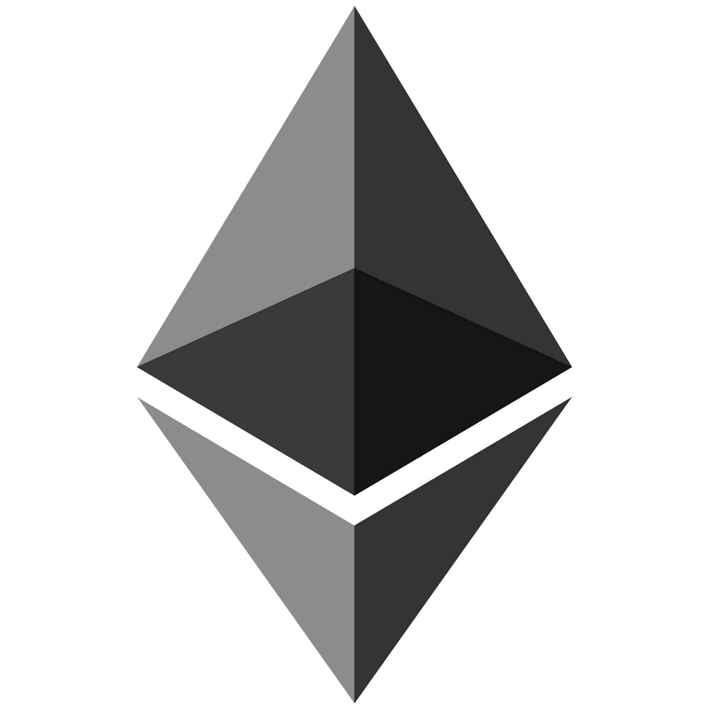

¿Qué son las Criptomonedas?
Las criptomonedas, también llamadas criptodivisas o criptoactivos, son un medio digital de intercambio. Cumple la función de una moneda, y de ahí que se las conozca con ese nombre. Sin embargo, es algo totalmente digital, que utiliza métodos criptográficos para asegurar sus transacciones financieras, controlar la creación de nuevas unidades y verificar la transferencia de activos.
Por lo tanto, podemos considerarlas como una alternativa descentralizada a las monedas digitales. Con el término "descentralizada" nos referimos a que estas monedas no son controladas por un único servicio o empresa. Lo mismo pasa con las monedas convencionales, centralizadas y organizadas por entidades y bancos, por lo que son un método opuesto a ambas.
La primera criptomoneda fue el Bitcoin creado por "Satoshi Nakamoto", seudónimo que corresponde a una persona que nadie sabe exactamente quién es. Esta persona publicó en 2009 un artículo en el que describía un sistema de pagos P2P al que llamó Bitcoin. Al cabo de unos meses él mismo publicó la primera versión del software que permite gestionar la red de la moneda, y empieza a interactuar en foros con los primeros interesados. Todavía no se sabe realmente quién es esta persona, pero sí que se sabe que se ha convertido en una de las 20 personas más ricas del mundo. El Bitcoin y su tecnología han tenido tal impacto, que a lo largo de los años han ido llegando cada vez más alternativas, nuevas criptomonedas alternativas que han ido incrementando su valor con mayor o menor suerte.


¿Cómo funcionan?
Cada criptomoneda tiene su propio algoritmo, el cuál es el que gestiona la cantidad de nuevas unidades que se emiten cada año. Por ejemplo tenemos el Bitcoin, que cada cuatro años se reduce por dos la cantidad que se producen, y sólo se emitirán un total de 21 millones de Bitcoins. Esto es una diferencia fundamental con las monedas convencionales, puesto que los bancos modifican su valor a su libre albedrío. Esto le da más capacidad de generar valor frente a unas monedas que pueden devaluarse cuando los bancos digan.
Y como los algoritmos de las diferentes criptomonedas es diferente, el máximo de unidades de cada criptodivisa también varía. Esto puede afectar también a su valor y su rendimiento, aunque no es algo que a los usuarios mas básicos nos tenga que preocupar tanto.
A esta red de ordenadores descentralizada con diferentes nodos se la conoce como cadena de bloques o Blockchain. Sus bloques o nodos están enlazados y asegurados usando criptografía. Cada bloque enlaza a un bloque previo, así como una fecha y datos de transacciones, y por diseño son resistentes a la modificación de datos.
Por lo tanto, es como si esta red o cadena de bloques fuera un libre abierto y público en el que se registran todas las transacciones que hacen dos usuarios. Cuando haces una transacción los datos de esta se registran en un bloque, y automáticamente se va replicando en el resto. Esto hace que los datos no puedan ser modificados ni manipulados sin modificar el resto de bloques, algo extremadamente complicado
Criptomonedas
más populares
Tal y como te hemos dicho antes, el Bitcoin empezó a dar sus primeros pasos en 2009. Desde entonces, con el tiempo han ido llegando cada vez más nuevas criptomonedas. Algunas llevan años posicionándose como alternativas robustas y populares como el Ethereum, el Litecoin, y otras similares. El Ethereum incluso tiene una nueva versión llamada Ethereum 2.
Pero también hay algunas sorpresas nuevas como la recién llegada Dogecoin, una criptomoneda creada por divertimento y basada en un meme. Pero desde que Elon Musk habló de ella asegurando que es la criptomoneda del pueblo, su valor no ha parado de crecer.
Y como estas, hay muchísimas alternativas con valores al alza, y nuevas que van saliendo. Algunos nombres propios entre las más valoradas son el Binance Coin, XRP, Cardano, Tether, Polkador, Uniswap, Chainlink o Bitcoin Cash. Sin embargo, la mayoría de ellas quedan con un valor que está muy lejos del que tienen las tres grandes, que son el Bitcoin, Ethereum y Ethereum 2.
Las criptomonedas se han vuelto muy populares, sobre todo a raíz de la inestabilidad económica del año 2020 por el COVID-19 y la aparente recuperación económica que ha traído consigo el 2021. El mundo de lo virtual ha ido ganando peso, y con él la inversión en activos que se alejan, en menor o mayor medida, de los mercados bursátiles clásicos.
Las criptodivisas o criptomonedas son una moneda digital o virtual diseñada para funcionar como un medio de intercambio, al igual que lo hace el dinero en la vida real.
¿Cómo invertir
en Criptomonedas?
La forma más común de obtener Bitcoin, Ethereum, Ripple (XRP) y/o cualquier otro tipo de monedas digitales es a través de intercambios. También se pueden comprar en los cajeros automáticos especiales que existen para las criptomonedas o alguien puede enviarlas directamente a su billetera electrónica.
Elegir un intercambio es un tema muy delicado, ya que algunos de ellos no están realmente protegidos tecnológicamente hablando. Muchos tienen un nivel bajo de seguridad, lo que los convierte en objetivos fáciles de los hackers trayendo como consecuencia que puedas perder tus monedas, sin posibilidad de recuperarlas, ya que tampoco cuentan con fondos de garantías que respalden tu inversión. Y, otros han sido creados por habilidosos estafadores, que buscan atraer inversores novatos que estén buscando dónde comprar criptomonedas, para desaparecer en algún momento una vez tengan tu dinero.
En contrapartida actualmente existen en el mercado de criptoactivos gran cantidad de Exchanges o casas de bolsa y de intercambio y almacenamiento, que cuentan con la confianza de un gran número de personas que se han beneficiado de sus servicios. Poseen además el respaldo de la experiencia proporcionada por miles de operaciones exitosas en el mercado digital. Los principales intercambios que podemos citar en términos de volumen de operaciones son Binance, Kraken, Coinbase, E Toro, CEX-10, Coinmama, Bitpanda, Luno, bitFlyer.
Riesgos
Los riesgos de operar con criptomonedas están relacionados principalmente con la volatilidad del mercado de criptomonedas. Como representan un riesgo elevado, es importante que entienda los riesgos antes de empezar una inversión en criptomonedas. Todos los activos financieros conllevan un alto riesgo, ya sea a través del uso del apalancamiento, las técnicas poco éticas de trading o la volatilidad del mercado. A continuación, le presentamos una lista de los riesgos más comunes asociados a la inversión en criptomonedas. Además las criptomonedas actualmente no están reguladas ni por gobiernos ni por bancos centrales. Sin embargo, desde hace poco están atrayendo cierta atención. Por ejemplo, hay dudas sobre si deben clasificarse como materias primas o como monedas virtuales. Tampoco hay formas perfectas de evitar fallos técnicos, errores humanos o ataques informáticos. Algo muy importante es que los cambios inesperados en el sentimiento del mercado pueden provocar fluctuaciones repentinas y contundentes del precio. No es infrecuente que el valor de las criptomonedas sufra caídas repentinas de cientos, incluso miles de dólares. Debería familiarizarse con estos riesgos antes de operar con estos productos. Para adentrarse en este mundo es necesario investigar un poco, esto puede ahorrarnos muchos problemas.